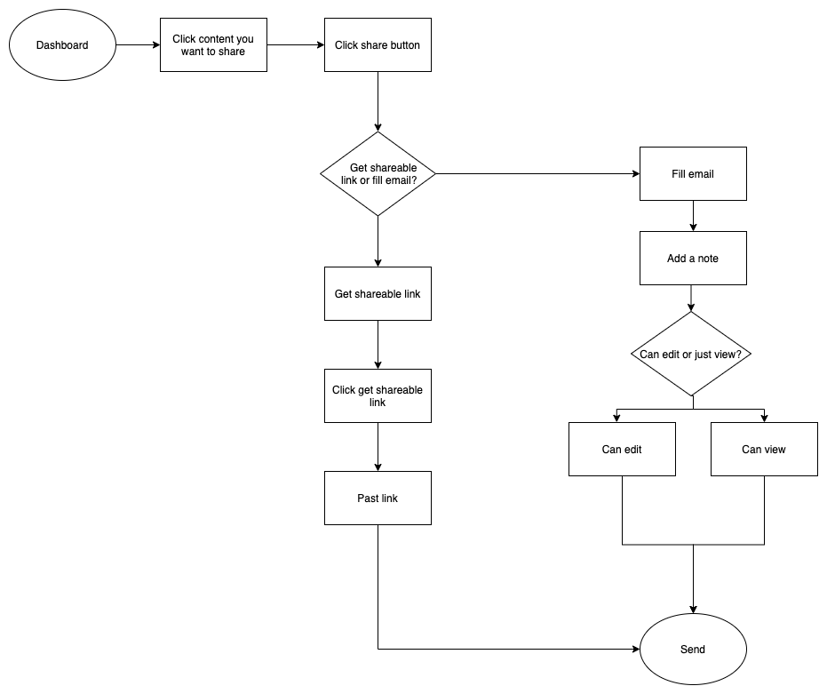
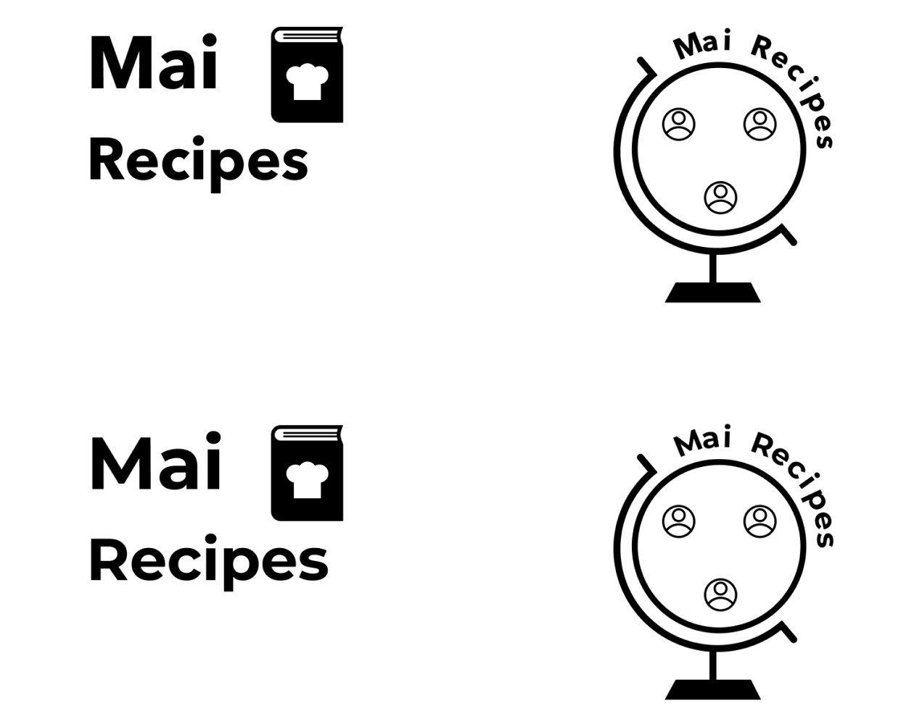
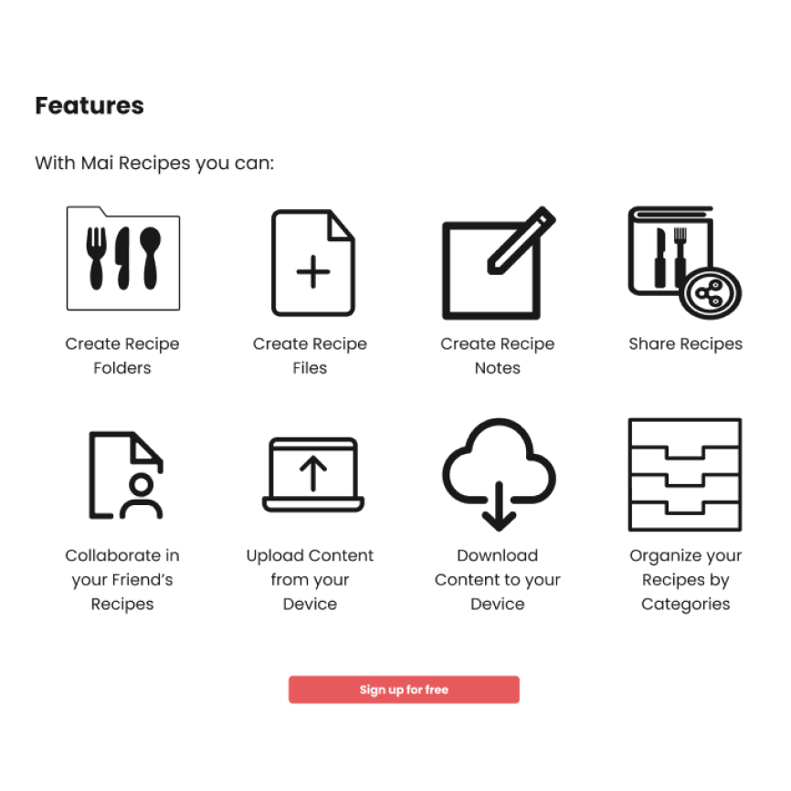
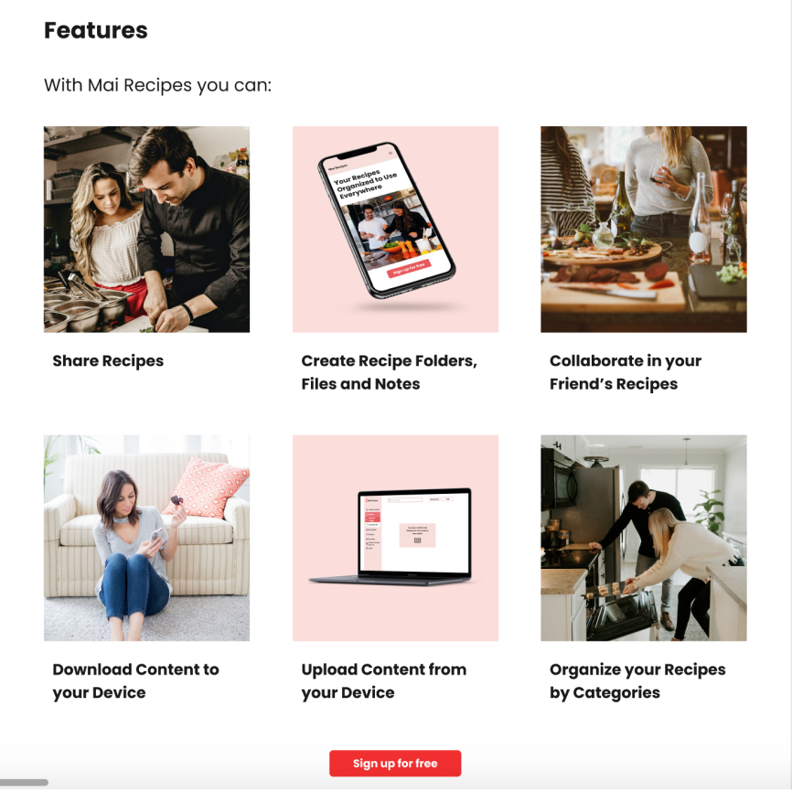
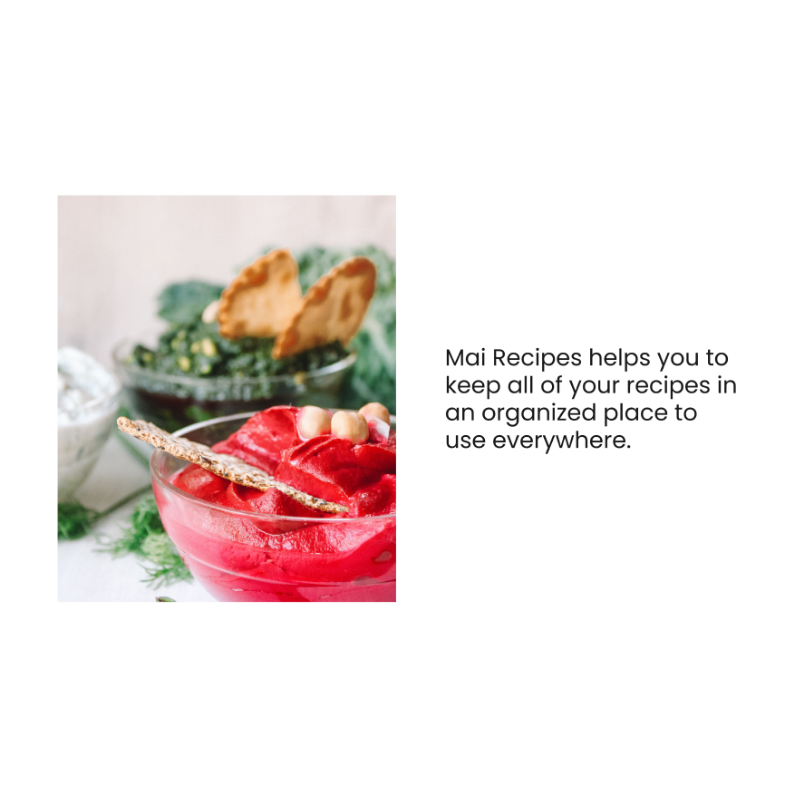
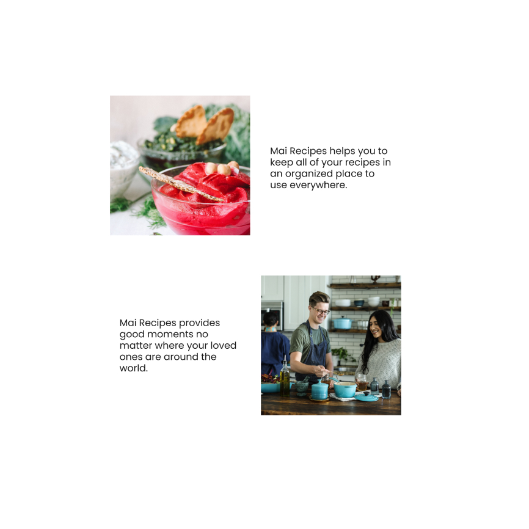
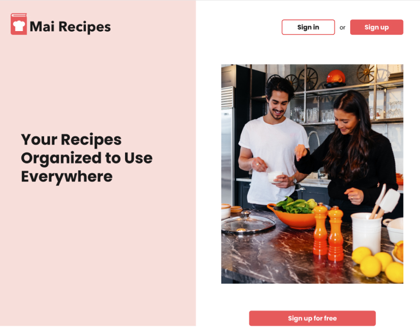
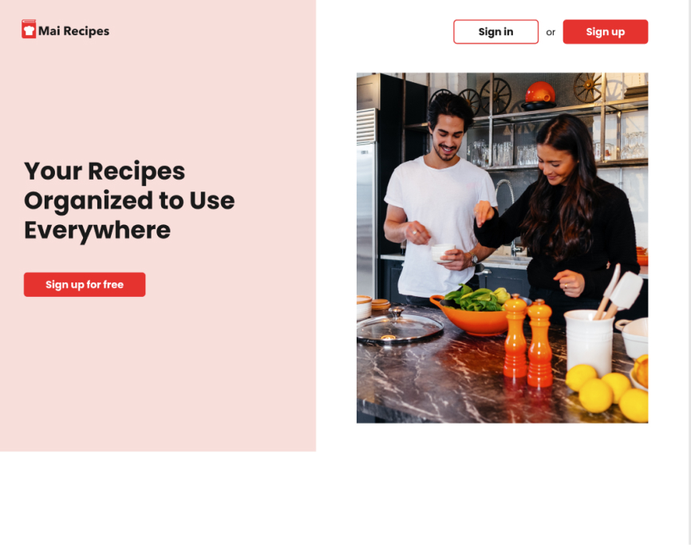
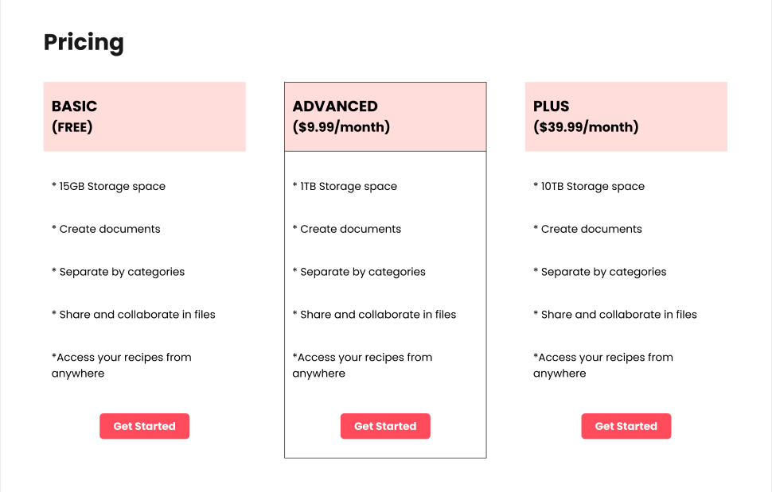
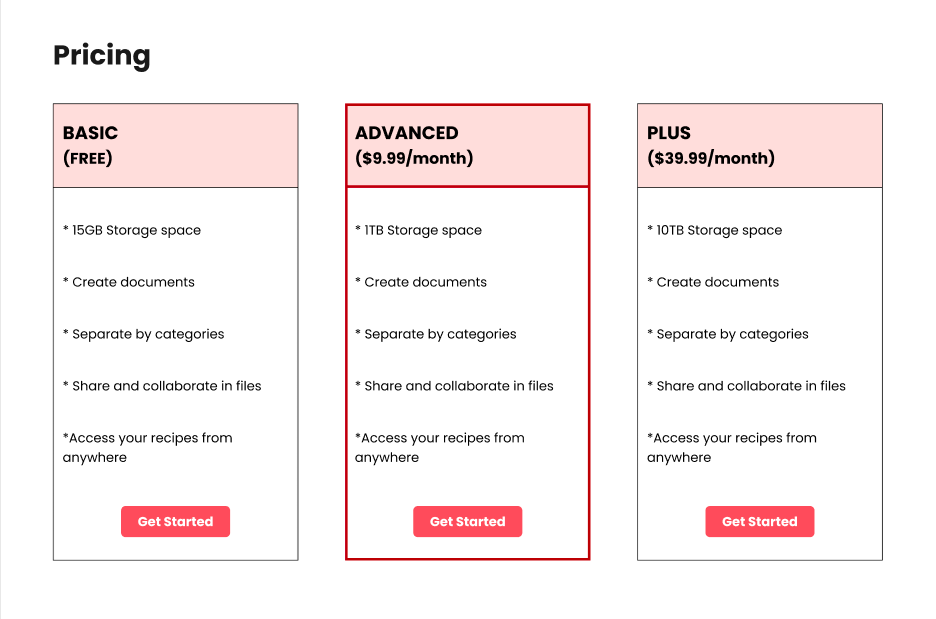

Part I: Overview
Design Roles
- Researcher
- UX/UI Designer
- Visual Designer
Deliverables
- User Survey
- Competitive Analysis
- Personas
- User Stories
- User Flows
- Sketches
- Wireframes
- Usability Tests
- A/B Test
- Branding
- High Fidelity Mockups
- Prototype
Tools
- Figma
- Draw.io
- Usability Hub
Summary
The Mai Recipes cloud storage allows users to create, share, download, and upload recipes, keeping everything organized by categories. The outcome of this cloud storage highlights the simple joy of cooking, sharing recipes and culture, with close connections.
Problem
I was challenged to discover if a new cloud storage/organization application could be successful in the current market. The challenge mentioned some features like: possibility to download and upload content, as well the possibility to share content in real time and work in collaboration.
Solution
After the research process, I got a clear picture of the target market and understood that a specific cloud storage for recipes could be successful in the current market. However, the cloud storage application should meet the users’ needs, such as creating and sharing content, organizing everything by categories to help them accomplish their goals.

Part II: Research and Discovery
User Survey
I observed some trends in the results of the survey. For example, in a multiple answer question I discovered that 79.3% of respondents do use cloud storage for personal use. In addition, the most important features in the users opinion is the possibility to upload, create and share content.
Competitive Analysis
I did a competitive analysis of Google Drive, Dropbox, and OneDrive, to better understand the current cloud storage market.
Google Drive allows multiple users to collaborate within one document, they offer a free plan of 15GB, and allows users to send email to share content.
Dropbox provides a fast sync feature, the possibility to request content from others, and allows users to connect to Slack or a project management tool.
OneDrive offers a free plan of 5GB, provides good user experience, and a clean interface.
Takeaways
After this study, I hypothesized that the following may be considered important features:
- Clean interface
- Free plans
- Connect to other applications
- Creation of documents offline
- Show all shared documents
- Real-time work collaboration
User Personas
Based on the research process, I created two personas to represent the potential users: Emily and Paula.
Emily - UX Designer
- Age: 33
- Location: Chicago-IL
- Gender: Female
Goals
- Have all her recipes organized to use everywhere
- Share only one recipe with friends or a file by category, like vegetarian, gluten-free recipes
- Work in collaboration with family and friends to customize the recipes according to their restrictions
- Possibility to have her recipes when offline
Frustrations
- She is having trouble to organize her recipes by categories
- The app she uses does not allow her to make comments in a recipe
- She wants to sync the documents between devices

I can’t wait to share recipes and work in collaboration with my friends to make delicious meals.

Paula - Lawyer
- Age: 43
- Location: Curitiba-PR-Brazil
- Gender: Female
Goals
- Have all her recipes organized
- Possibility to share a recipe or folder
- Cook together with family members
Frustrations
- She is having trouble to use the cloud storage offline
- She cannot comment in a shared recipe
- She cannot share recipes through WhatsApp
My life would be easier if I could share recipes and cook together with family members, wherever I am around the world.
Part III: Information Architecture
User Flows
The next step was creating user flows to help me build the wireframes. Here you can see the user flow of share content.
 View User FlowSketches & Wireframes
After that, I created the sketches and wireframes to conduct the usability tests and iterate.
Landing Page
Pricing
Sign up
Part IV: Branding and Identity
Branding
The emotion and characteristics that the brand conveys is a happy personality capable of keeping people connected and close. Sharing food and sharing knowledge helps to grow and maintain bonds. People are happier when they are connected with someone that really cares for them and matters to them.
I started the branding process with a brainstorming session to come up with some ideas and sketch different concepts for the logo.
Name
After analyzing some names, I decided for Mai Recipes because it is a friendly and happy name. Mai is a nickname for Maira (my name). Besides that, the sound of “Mai” is similar to the sound of “My” which could create a feeling that the cloud storage is a property of the users. Also, I decided to include the word “recipes” because it would make it easier for people to find the cloud storage when they are searching for recipes on the internet.
Logo
Subsequently, I refined two versions of the logo to a polished black and white mark.
After receiving helpful feedback, I decided to stay with the first one, but with some modifications regarding the size of the chef’s hat, the placement of the book and the name. Here is the final version of the primary logo.
Colors
After studying the psychology of the colors and analyzing many food websites that use the same color, I decided on red.
I have chosen this color because it is warm, energizing, passionate, and positive. I want people to feel happier when they are connected with their loved ones to enjoy good moments in life while cooking together.
Also, I decided on a monochromatic palette because it is helpful for people who have some kind of color blindness. To create this palette, I first determined a color as the main color (number 40), and from this color, I created the darkest and lightest tones.
Typography
Speaking of typography, I have chosen Avenir Next as the brand typeface and Poppins as a complementary typeface because these typefaces reflect the simplicity and happiness the brand is going to convey.
Part V: Visual Design
High Fidelity Mockups
The next step was creating the high fidelity mockups for the project. The first mockups were not approved for some small changes.
I was told not to use icons to represent the features, so after feedback, I replaced them with pictures.
First Version
Final Version
There was a picture that was not well positioned to create a hierarchy between elements. I changed the picture by moving it to the end of the landing page, close to another one, creating a good hierarchy.
First Version
Final Version
Besides the changes that were required from the grading team, I changed some other small parts to improve the usability.
I realized that the buttons were not meeting accessibility guidelines when used on the peach background, so I decided to change the primary color number 40 to the primary color number 50 to meet the accessibility guidelines.
First Version
Final Version
Prototypes and Tests
The next step in the process was creating the prototype on the high fidelity mockups, to finally conduct a usability and preference test.
A/B Test
The A/B Test allowed me to make specific design decisions related to the drop-down menu, pricing and sign-up page for mobile devices. I received feedback from 33 participants that helped me to understand what was performing better.
The most significant change was related to the pricing. I wasn’t sure if I should use a stroke to separate the subscritions. After 88% of the respondents choose this option, I concluded that I needed to change it to deliver a product that serves my users’ needs the best.
First Version
Final Version
Usability Test
I conducted the usability tests on the prototypes with three people. I asked them to complete the sign-up process, create a new file, create a new folder, and upload a folder from the computer.
Their feedback helped me to understand that it was a little confusing the way I presented “files” and “notes”. Thus I decided to differentiate this part of the process. I believe now the users can understand that a file is aimed to create a recipe and that a note is aimed to create something quicker, like writing something that comes to your mind related to the recipes or some information about an ingredient.
Besides that, their feedback helped me to understand that I needed to add the option “forgot password”, and that the file saves automatically, to help the users to navigate on the pages.

Conclusion
I was challenged to create a cloud storage that could create content; work in collaboration; share content in real-time; organize content in categories; download and upload files.
In order to solve the problem, I did deep research and created Mai Recipes which I believe can be successful in the current market.
I created this to help people stay connected to their families and their culture across state lines or even continents. I want my users to feel happy and loved sharing recipes and cooking together with the ones that matter the most in their lives.
View Mobile Prototype View Desktop Prototype